Over 3 years of full-stack development experience, specializing in building large-scale, high-performance, and scalable web applications. Combining digital content creation and media experience to deliver comprehensive solutions.
Over 3 years of full-stack experience, specializing in building large-scale, high-performance, and scalable web applications. Comfortable across the entire product lifecycle—from front-end interface design to back-end business logic and databases—across multiple technology stacks.
✨ Full-Stack Developer
Dedicated to User-Centered Innovation
I build large-scale web applications with strong performance and scalability. I combine solid engineering with hands-on digital content experience to deliver end-to-end, effective solutions.
Personal Information:
My name is Nguyen Dai Hoang, and I am currently a 3rd-year student majoring in Information Technology at the International Training Institute of Thai Nguyen University of Information and Communication Technology (ICTU).
"I believe in creating software that solves real problems while elevating user satisfaction."
Hobbies
Technical Proficiency
Full-stack Web Development
Over 3 years of full-stack experience, specializing in large-scale, high-performance, and scalable web apps.
HTML5/CSS3
JavaScript/ES6+
Next.js (Basic)
APIs (integration, consumption & design)
Python
.NET Core (C#)
RESTful APIs
SQL (DB design & queries)
Docker
AWS (basic cloud services)
CI/CD (Basic)
Performance Tuning
AI Tools & Ecosystem
Using modern AI tools to accelerate development and improve product quality.
Visual Studio Code
Visual Studio 2022
Cursor (AI Assistant)
GitHub Copilot / Tabnine
Claude (LLM)
Grok (LLM)
GPT (LLM)
Gemini (LLM)
Google AI Studio
Digital Content Creation & Media
Hands-on experience building a personal brand and engaging audiences on digital platforms.
TikTok (9K+ Followers)
CapCut (quick editing)
Content strategy
Streamer / YouTuber
Adobe Premiere Pro
Photoshop (Thumbnail/Image Design)
MC at TNTV
Scriptwriting
Media content creation
Work
GAME·React, Next.js
Cờ Tướng GenZ — Modern Chess
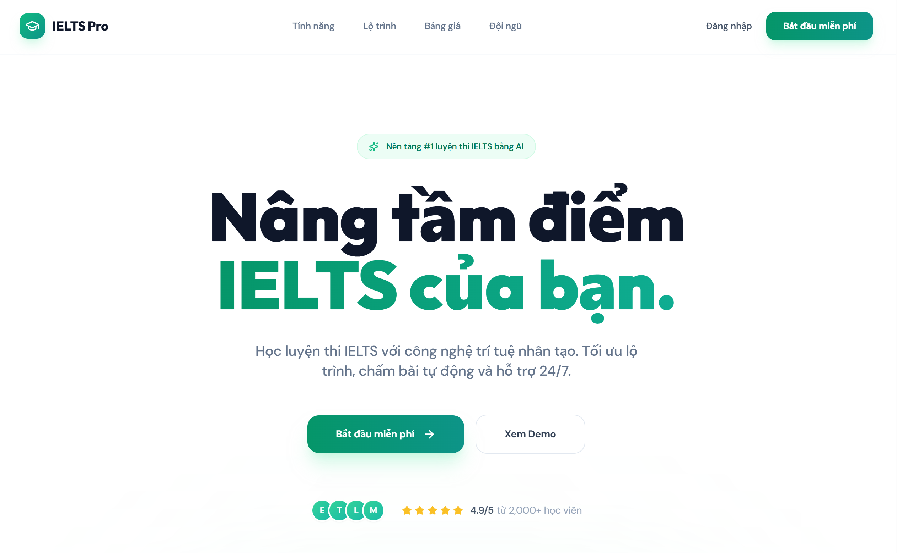
EDUCATION·React, Next.js, Tailwind
IELTS Pro — Exam Prep Platform
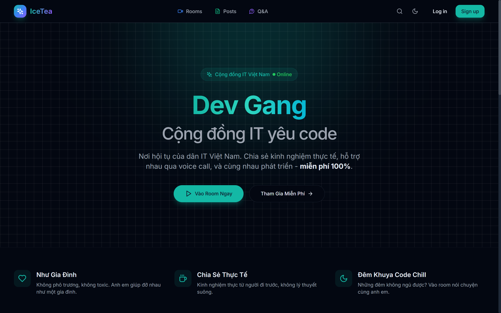
WEB DESIGN·React, Vite, CSS
Ice Tea — Tea Culture Web
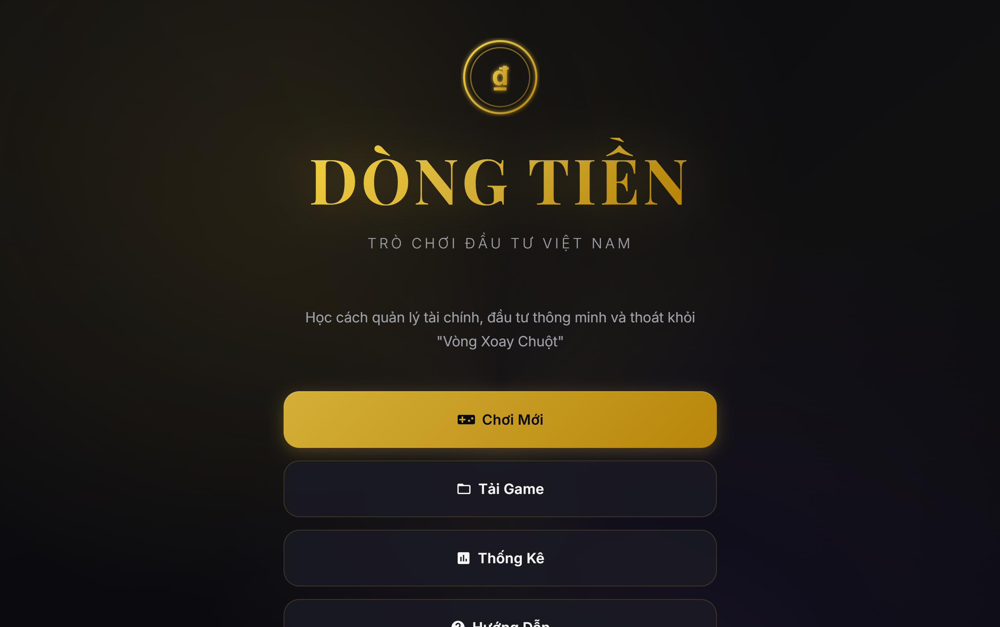
GAME·Phaser, JavaScript
Game Vui Dòng Tiền VN
SYSTEM·Python, JS
HE Coffee — Cafe Management App
AI EDUCATION·C#, .NET, Blazor
LearnLangs — Language App
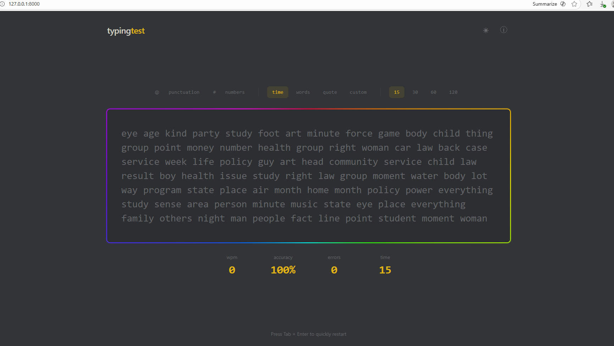
TOOL·Python, JS
typingtest — Typing Practice App
Latest Articles
Engineering·6 min read
Zero to One: Don't Become an "Obsolete" Version of Someone Else
Inspiration·5 min read
Don't Blame Technology: Is the Customer Disrupted Your Business?
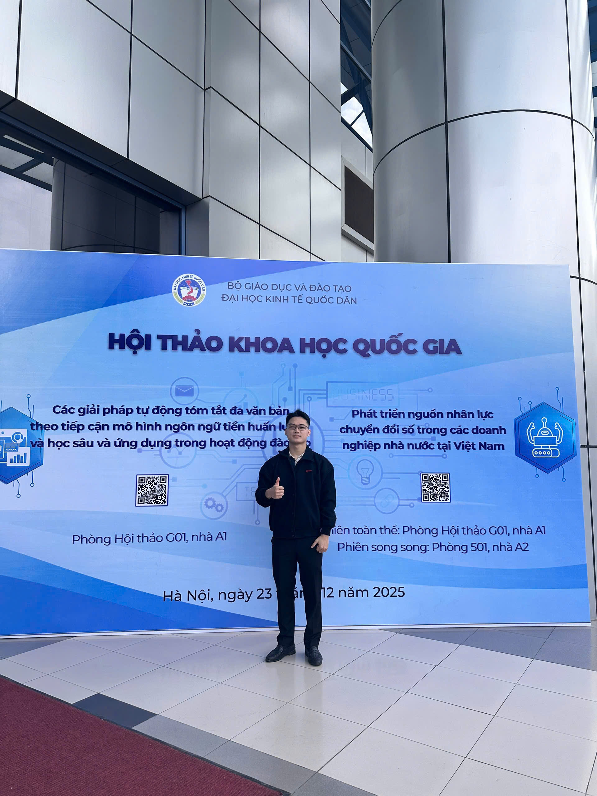
News·4 min read
Honored to Attend and Participate in National Scientific Conference
Engineering·3 min read
[Achievement Unlocked] Proud Winner of the Second Prize! 🥈
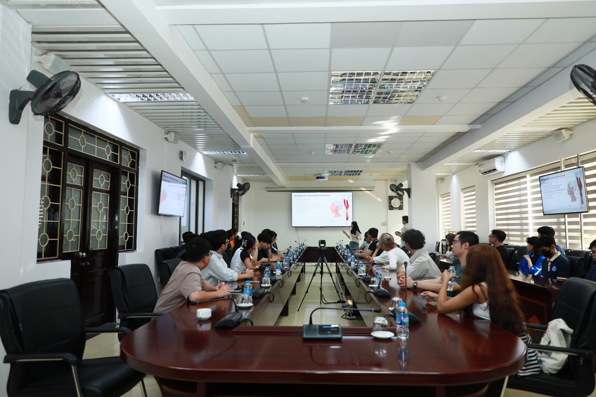
Research·5 min read
Seminar: Advanced Technology Applications in Biomedical Science
Inspiration·6 min read
From Student to Discussion Partner: Immersing in AI with Dr. Lin (FCU)
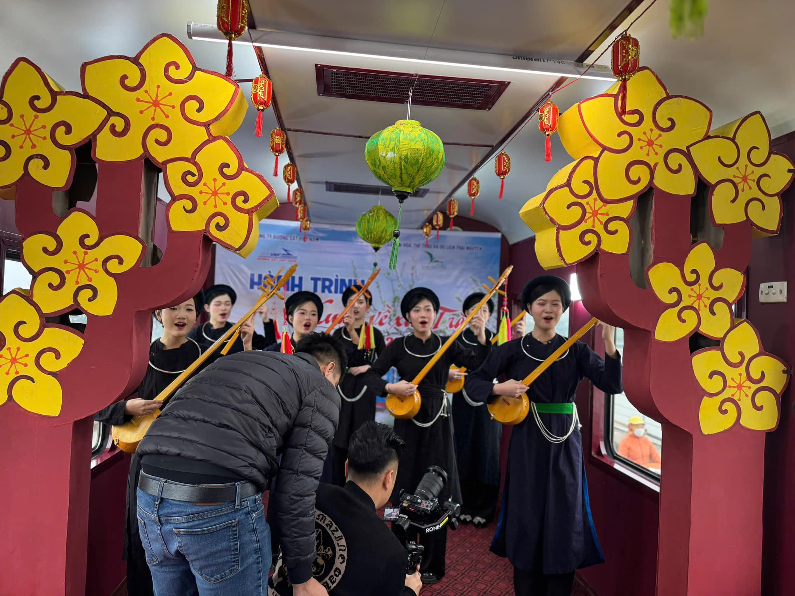
Media·7 min read
MC Experience at Thai Nguyen Newspaper and Television Broadcasting
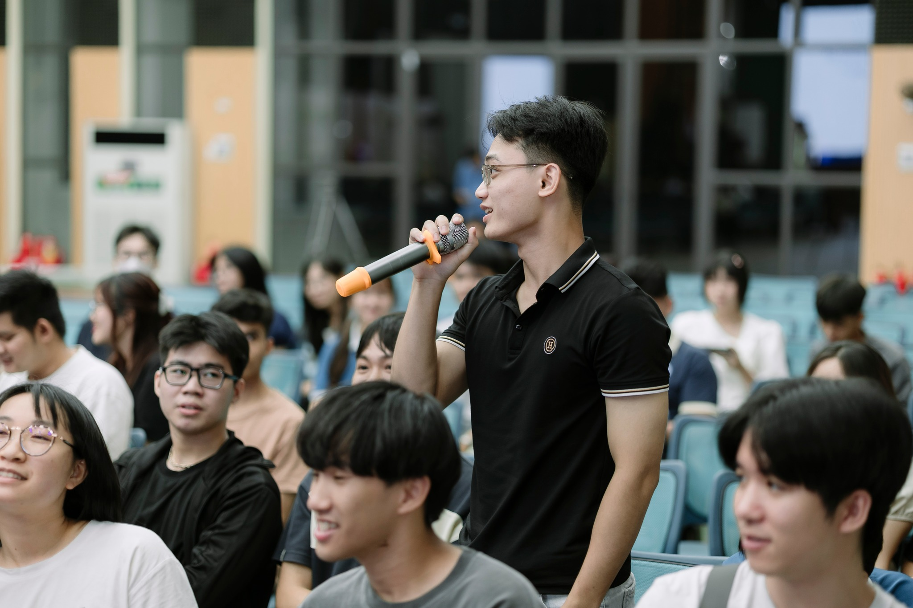
Experience·5 min read
My Journey as English Club President
Game Development
Cờ Tướng GenZ — Modernizing a Classic
Tech: React, Next.js, Tailwind CSS
How can we make a centuries-old game appeal to the TikTok generation? That was the core challenge behind Cờ Tướng GenZ.
This project isn't just about the rules of chess; it's about the experience. By combining a vibrant GenZ aesthetic with smooth animations and a responsive interface, we've transformed the traditional Chinese Chess into something fresh and exciting.
Mastering IELTS requires more than just books; it requires an interactive environment that tracks your progress and sharpens your skills.
IELTS Pro was designed to simplify the preparation process. From simulated listening tests to reading modules, every feature is optimized for student success. The platform uses Next.js for lightning-fast performance and a clean UI to keep learners focused on what matters.
Tea is not just a drink; it's a culture. This web experience was built to celebrate that heritage in a modern digital space.
The goal of Ice Tea Web was to create an atmosphere of tranquility. Through minimalist design, soft typography, and elegant imagery, the site invites visitors to explore premium tea varieties and the stories behind them.
Why is financial literacy so hard to teach? Because it needs to be fun. This game makes managing money an adventure.
Inspired by the classic Cashflow game but tailored specifically for the Vietnamese market, this project helps players understand investment, saving, and wealth management through a fun, interactive simulation.
Zero to One: Don't Become an "Obsolete" Version of Someone Else
By DavidHE | Book Review: Peter Thiel
In the world of business and personal development, we are often spoon-fed a very safe mindset: Look at what others are doing successfully and do it again, but slightly better. Open a more beautifully decorated café, create a smoother app, or try to compete for 1% of a massive market.
Peter Thiel: "Competition is for losers."
But after finishing "Zero to One" by Peter Thiel, I realized that mindset is actually a trap. Peter Thiel threw a splash of cold water on traditional business teachings by declaring: "Competition is for losers."
The Paradox of Competition
We have been obsessed with competition since our school days. Grades, rankings, prestigious universities... it all trains us to become warriors excellent at defeating others to win identical rewards. The consequence is that when we enter the real world, startups also dive into tearing each other apart in bloody "red oceans," only for profits to be eroded to zero.
Reflecting on this, Thiel's philosophy of "Going from 0 to 1" is profoundly deep. Why dive into opening the 100th social network when you can create something that never existed before? True value does not lie in beating your competitors, but in reaching monopoly by solving a unique problem that no one else can. Monopoly, in a positive sense, is the reward for those who dare to innovate.
Life is Not a Lottery
One of the chapters that made me think the most is "You are not a lottery ticket". Nowadays, people often attribute the success of Bill Gates or Mark Zuckerberg to luck, circumstances, or "being at the right time." Our generation is suffering from "indefinite optimism"—believing the future will be better, but having no specific plan, only trying to accumulate many general skills to "play it safe."
Thiel reminds us: You cannot diversify your own life. You have only one life, one future. Applying "intelligent design" thinking instead of leaving it to the random "evolution" of circumstances is the only way to create quantum leaps.
A Lesson for Each of Us
Even if you don't dream of building a billion-dollar startup, the philosophy of "Zero to One" still applies perfectly to building a personal brand and career. Don't try to be a "well-rounded" but mediocre employee. Find your own "secret"—a niche field, a specialized skill that few care about, then become the best and most unique in that area.
"The path from 0 to 1 is a lonely one, going against the crowd. But as author Peter Thiel said, it's the only way we can not only make the future different but also make it better."
The future doesn't just happen; it's waiting for us to create it. Everything great starts with a first step, going from a round zero to reach the unique number one.
Business & Strategy
Title: Don't Blame Technology, Customers Are the Ones "Disrupting" Your Business Model!
We live in an era where terms like "digital transformation," "AI," or "Blockchain" are ubiquitous. When an industry "giant" falls, financial articles immediately conclude: "They were too slow in adopting technology!" But is that really the truth? Nokia or Borders invested mountains of money into R&D and e-commerce, achieved countless innovation awards, yet still perished. Why?
Are your customers skipping the checkout line to buy online while in your store?
The Real Enemy Is Not Your Competitor's Tech
The book Unlocking the Customer Value Chain by Thales S. Teixeira delivers a heavy blow to the conventional thinking of business leaders: The real enemy is not the competitor's technology, but the shift in customer behavior.
The concept of "Decoupling" (Separating the value chain) in the book truly made me stop and reflect. Think about our own shopping habits. How many times have you walked into a high-end electronics store, admired a curved-screen TV, listened to the enthusiastic sales consultant, and then... pulled out your phone to order that exact model on Shopee or Amazon because it was cheaper?
This behavior (known as showrooming) completely severs the "product discovery" phase from the "payment" phase that traditional retailers spent immense effort building.
The Biggest Mistake of Legacy Companies
The greatest mistake long-standing companies make is designing their business based on the resources they possess, forcing the customer to play by their rules. They obsess over competitors (because competitors are few and easy to see), while forgetting to monitor millions of customers silently changing their preferences every day.
When customers realize they are spending too much "time" and "effort" (not just money), they will immediately leave when a small startup appears, offering a more convenient, decoupled option.
The Core Lesson: Clear the Path
So, what is the core lesson here? Innovation is not about adding cumbersome technological features. Innovation means clearing the path, removing the friction in the customer's experience. Instead of getting angry and trying to "trap" consumers with complex contracts, businesses need the courage to "proactively decouple" themselves.
Best Buy achieved this successfully when they stopped trying to be a pure retailer and pivoted to charging electronics brands a fee to turn their stores into premium exhibition spaces.
Finding Your Missing Link
You don't need to create an entirely new product to be successful. Sometimes, all you need to do is look at your industry's current value chain, find a loose link that is frustrating users, and provide a smoother solution.
So, in your industry, which "link" is costing your customers the most time and effort? That might just be the next goldmine waiting for you to uncover!
Research & Technology
Specialized Seminar: Advanced Technology Applications in Biomedical Science and Artificial Intelligence
On September 22, Thai Nguyen University of Information and Communication Technology (ICTU) successfully organized an important specialized seminar, marking academic and research collaboration with experts from the Department of Electronic Engineering and Computer Science at Hong Kong Metropolitan University (HKMU).
The event attracted the enthusiastic participation of leadership, faculty, researchers, and students from ICTU, creating a vibrant and highly practical academic exchange atmosphere.
The specialized seminar at ICTU with enthusiastic participation from faculty and students
✨ Core Content: The Intersection of Technology and Medicine
The seminar focused on two research areas that are among the world's top priorities:
1. Advancing 3D Ultrasound Tools for Carotid Atherosclerosis: Transforming Clinical Trials with Novel Biomarkers and Automation
Speaker: Dr. Shirley CHEN, Senior Lecturer, HKMU.
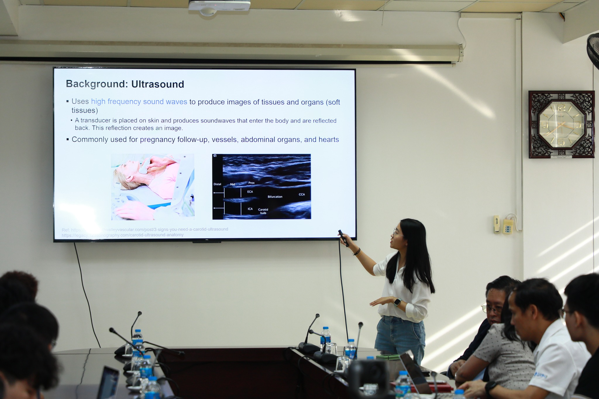
Dr. Shirley Chen presenting on advanced 3D Ultrasound technology
Key Highlights: Dr. Shirley Chen's presentation focused on integrating advanced 3D Ultrasound technology with Automation algorithms. This approach not only improves the accuracy and efficiency of medical imaging diagnostics but also provides novel biomarkers for evaluating and monitoring carotid atherosclerosis, thereby optimizing clinical trials.
2. Leveraging Quantum Machine Learning to Classify Biosignals for Disease Detection
Speaker: Assoc. Prof. Dr. Kevin HUNG King Fai, Head of Department, HKMU.
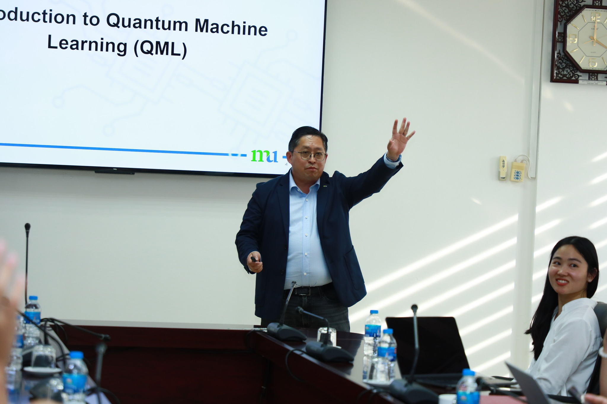
Assoc. Prof. Dr. Kevin Hung introducing Quantum Machine Learning
Key Highlights: Prof. Kevin Hung introduced the breakthrough potential of Quantum Machine Learning (QML). QML, with its ability to process complex data on a large scale and at higher speeds than classical computers, is being applied to analyze biosignals. This research opens new pathways for early and accurate detection of various diseases, demonstrating the indispensable role of quantum physics and AI in modern medicine.
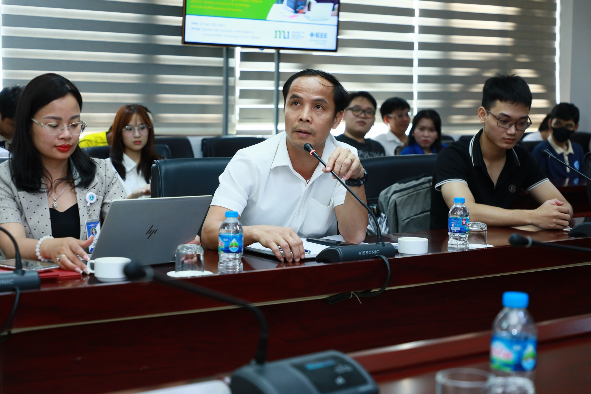
Enjoying and learning directly from leading experts.
🤝 The Importance of International Collaboration
The seminar served not only as a platform for sharing specialized knowledge but also as an opportunity to strengthen the collaborative relationship between ICTU and HKMU—a public university in Hong Kong renowned for its applied training and research programs.
The event successfully facilitated international academic connections, creating an environment for Vietnamese researchers, faculty, and students to directly access world-leading technological trends in Information Technology and Biomedical Science. This provides a solid foundation for developing high-quality human resources capable of integration and contributing to the nation's scientific and technological development.
The group photo captures the wonderful learning spirit and the tight academic cooperation between ICTU and HKMU.
Student Life
My Journey as English Club President
This is a comprehensive article compiling the memories from my time as President of the English Club at ICTU. A journey filled with challenges, achievements, and unforgettable moments that shaped not just my leadership skills, but also my personal growth.
1. Introduction - The Beginning
Stepping into the role as English Club President was both an honor and a significant responsibility. I remember the mix of excitement and nervousness that filled me during my first official meeting. Taking on this leadership position meant I would be responsible for organizing events, managing a diverse team, and representing our club at various competitions and activities.
The first official meeting was a moment I'll never forget. Standing in front of the members, I felt the weight of expectations but also the thrill of new possibilities. It was the beginning of a journey that would teach me invaluable lessons about leadership, teamwork, and personal growth.
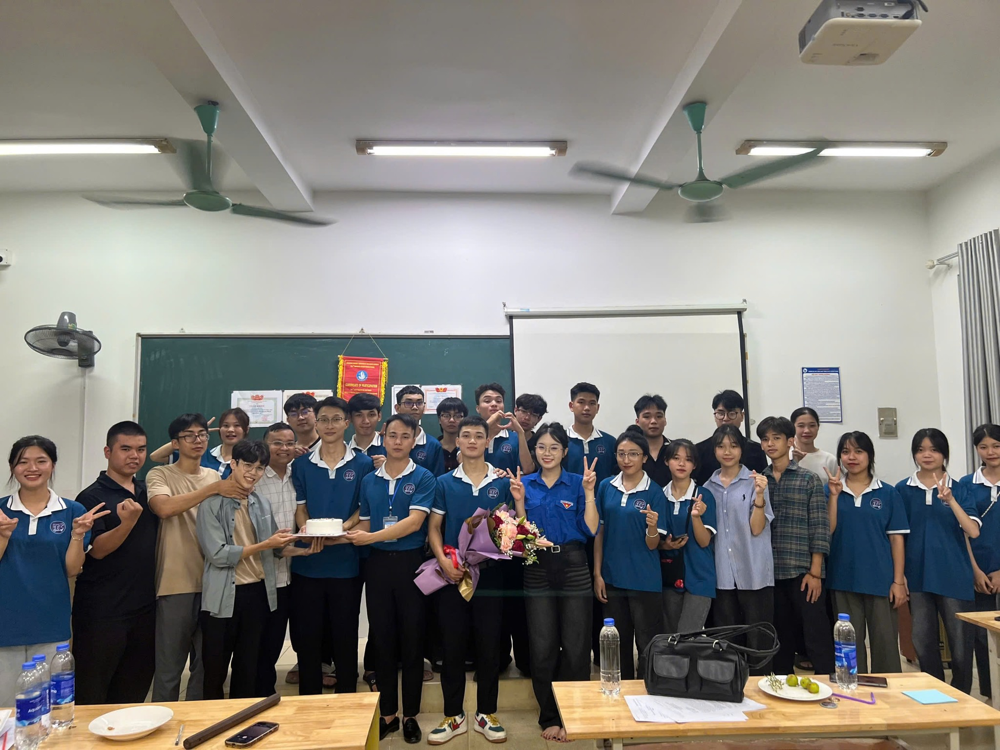
The Beginning Moment – Full of Passion and Expectation.
2. Building the Foundation
The early days were all about building connections and establishing a strong foundation for the club. Our early club meetings focused on team bonding activities that brought members closer together. We organized fun games and interactive sessions that not only improved English skills but also created lasting friendships.
Learning to lead and manage a diverse team was one of my first challenges. Each member brought unique perspectives and talents, and it was my responsibility to create an environment where everyone felt valued and motivated. Through these early activities, I began to understand the true meaning of collaborative leadership.
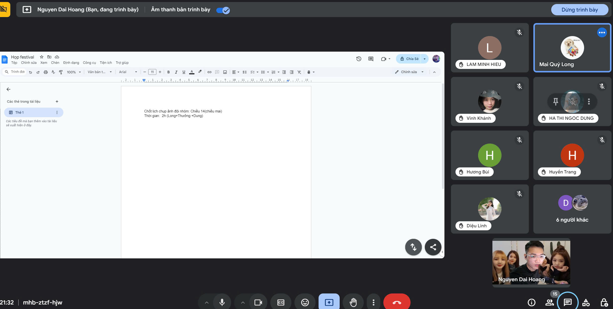
Early club meetings with fun games and team bonding activities.
3. Major Achievements & Competitions
A. English Festival 2024-2025
One of the most memorable achievements was leading our team to compete at Thai Nguyen University. The English Festival 2024-2025 was a significant event that brought together English clubs from various universities. The competition was intense, but our team's dedication and preparation paid off.
We won the consolation prize, receiving 1,500,000 VND. But more than the prize money, the pride of representing ICTU on the red carpet was an unforgettable experience. Standing there with my team, I felt immense pride in what we had accomplished together.
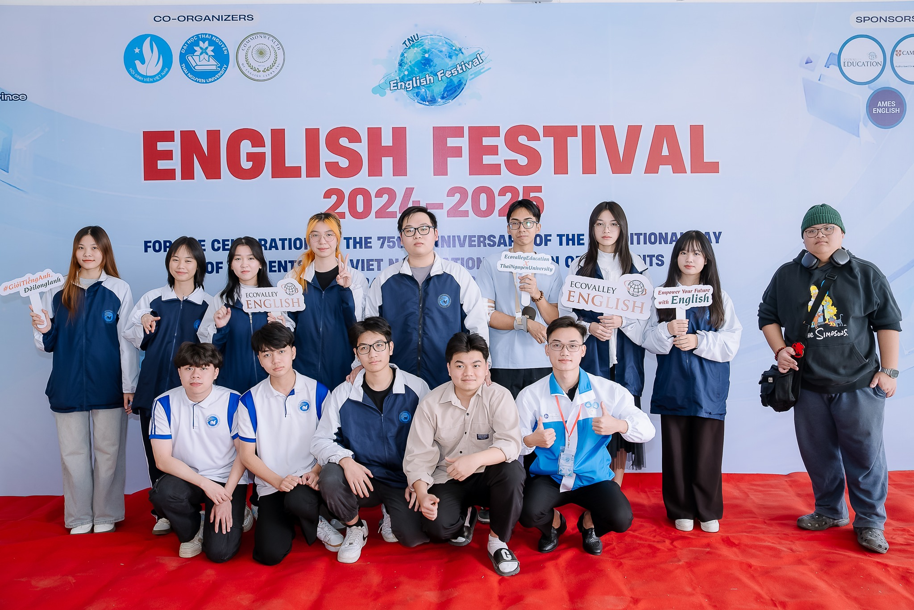
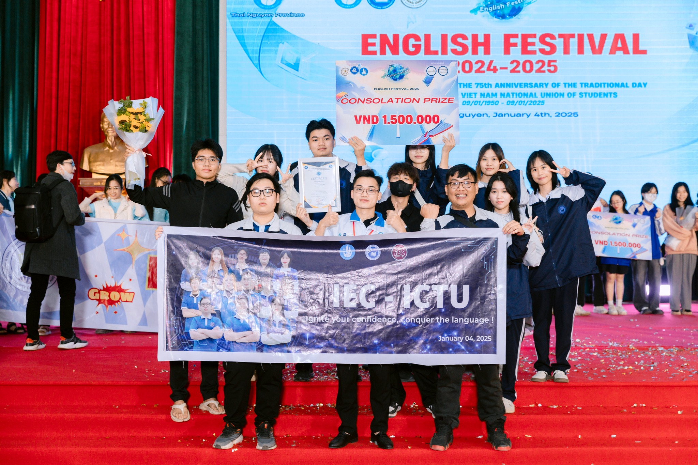
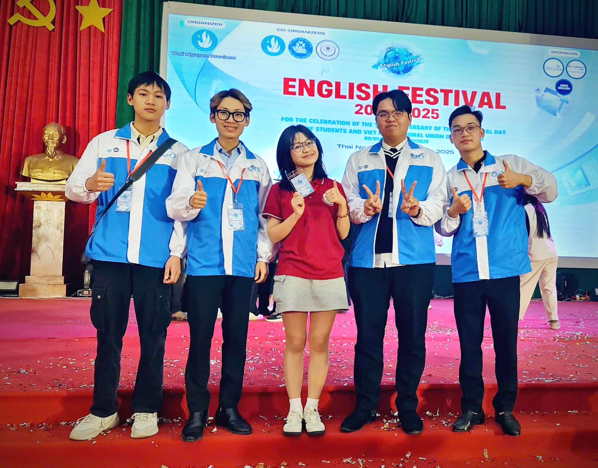
B. Awards & Recognition Ceremony (2023-2024)
The Awards & Recognition Ceremony for the 2023-2024 academic year was a moment of celebration for our entire team. Receiving awards for club excellence was a testament to the hard work and dedication of every member. Standing with the entire team as we were honored was a moment that reinforced the importance of collective effort.
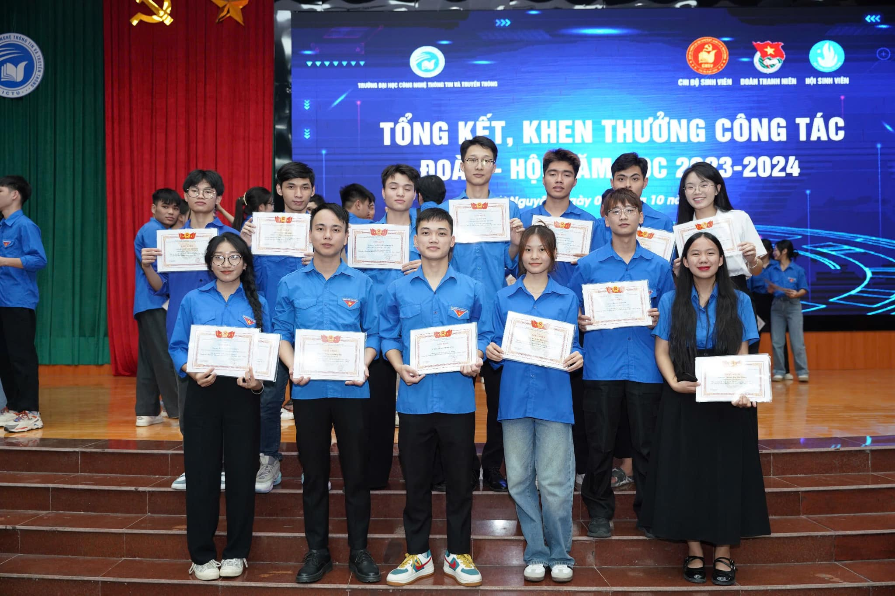
C. Olympic Tiếng Anh ICTU 2024
Organizing the Olympic Tiếng Anh ICTU 2024 was one of the largest responsibilities I undertook as President. This major English competition required months of planning, coordination, and teamwork. Seeing so many students participate and excel in the competition was incredibly rewarding. The event not only showcased the English skills of ICTU students but also strengthened the English learning community at our university.
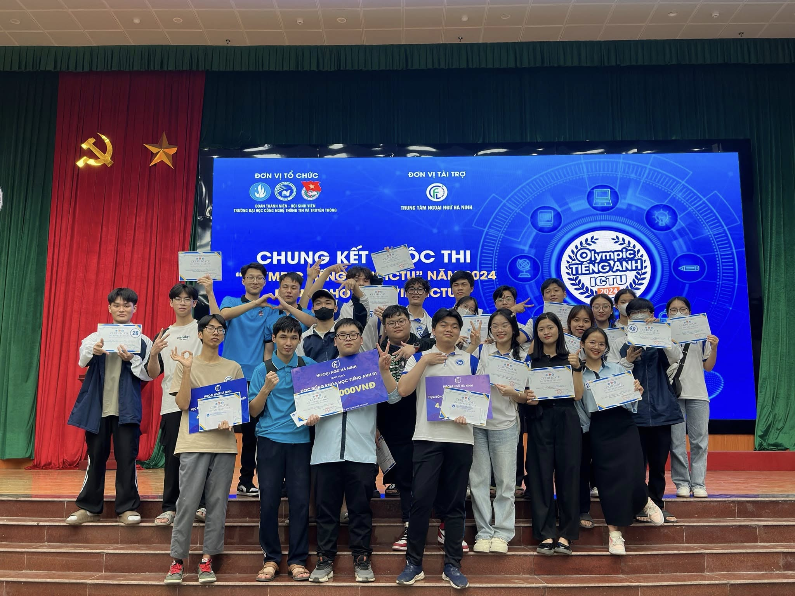
D. STAR Awards 2024
Another significant achievement was our participation in the STAR Awards 2024. We competed in the "Young Generation - Healthy Lifestyle for a Healthy Heart" category, which required us to create meaningful content about health and wellness. Once again, our team's efforts were recognized with another consolation prize win of 1,500,000 VND.
Presenting alongside talented teammates was an experience that taught me the value of collaboration and mutual support. Each team member contributed their unique strengths, creating a presentation that was both informative and engaging.
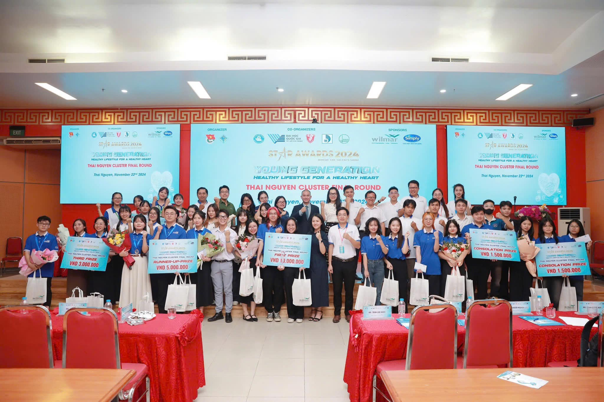
E. T.E.C Spell-Off Competition
The T.E.C Spell-Off Competition was a fun and challenging experience that tested our spelling skills and quick thinking. While it was a lighter competition compared to others, it provided valuable opportunities for members to practice and improve their English vocabulary in a competitive yet friendly environment.
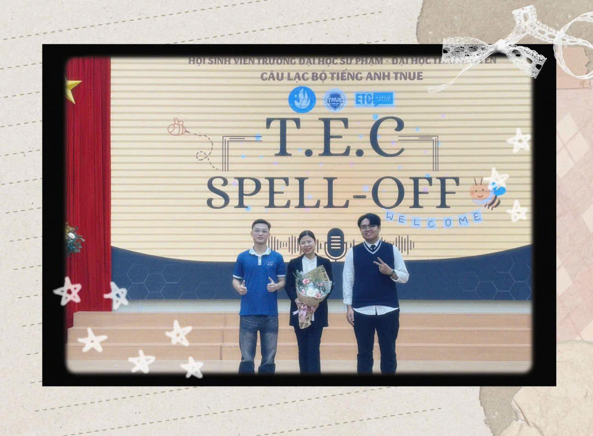
Major events and competitions – where we connected and shined.
4. Special Events & Cultural Activities
A. Colourful ICTU 2025
Colourful ICTU 2025 was one of the most vibrant events we organized. This cultural celebration brought together international guests and students from various backgrounds. We organized interactive games and meaningful exchanges that celebrated cultural diversity and created a vibrant, inclusive community.
The event was a beautiful representation of how language and culture can bring people together. Seeing students from different countries and backgrounds connect through English and shared activities was truly inspiring. It reinforced my belief in the power of cultural exchange and inclusive leadership.
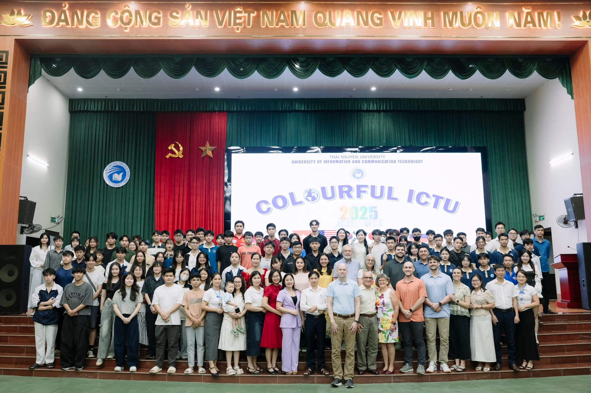
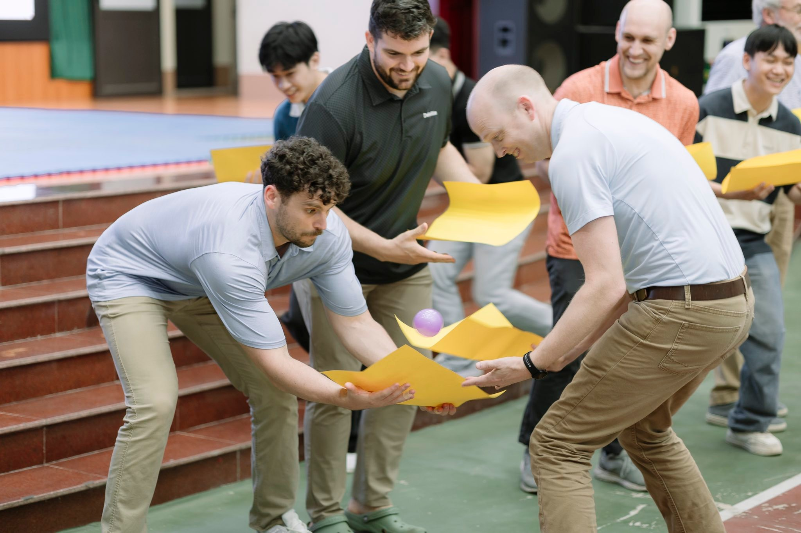
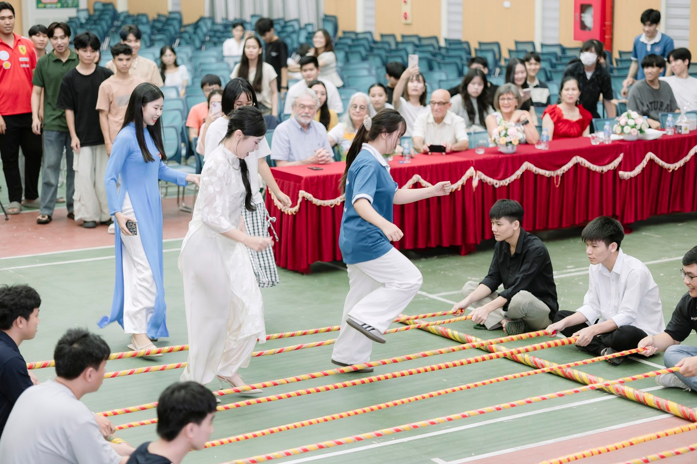
B. Vietnamese Teachers' Day Celebration
The Vietnamese Teachers' Day Celebration was a heartfelt event where we honored our mentors and advisors. Organizing this celebration was particularly meaningful as it allowed us to express our gratitude to the teachers who had supported and guided us throughout our journey.
The gift-giving and appreciation activities created a warm atmosphere that strengthened the bond between students and teachers. It was a reminder that leadership is not just about organizing events, but also about fostering meaningful relationships and showing appreciation to those who support us.
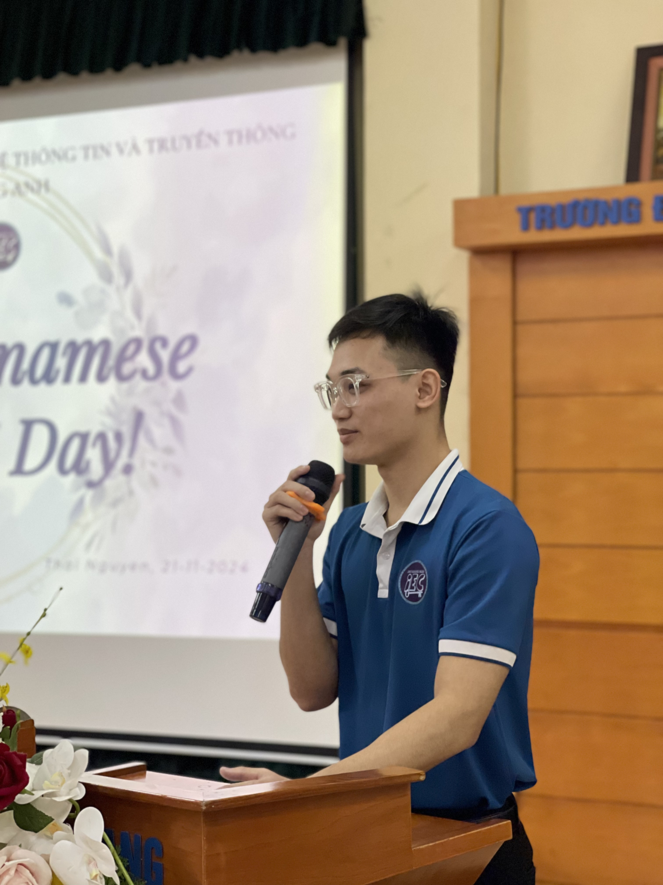
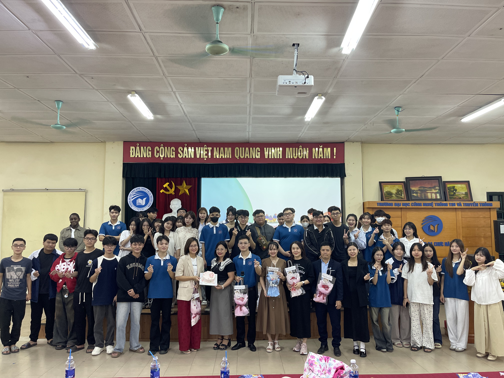
5. Growth & Lessons Learned
My time as English Club President was a period of tremendous personal and professional growth. One of the most significant improvements was in my public speaking skills. Leading meetings, presenting at competitions, and speaking at various events helped me become more confident and articulate in expressing my ideas.
Event management and organization became second nature to me. From planning small weekly activities to organizing major competitions, I learned to balance multiple responsibilities, manage timelines, and coordinate with various stakeholders. These skills have proven invaluable in both my academic and professional life.
Perhaps the most important lesson was about teamwork and collaboration. Leading a diverse team taught me that the best results come from leveraging each member's unique strengths. I learned to listen, delegate effectively, and create an environment where everyone felt empowered to contribute.
Handling pressure and responsibility was another crucial skill I developed. There were moments of stress and uncertainty, but these challenges taught me resilience and problem-solving. I learned that leadership is not about having all the answers, but about finding solutions together with your team.
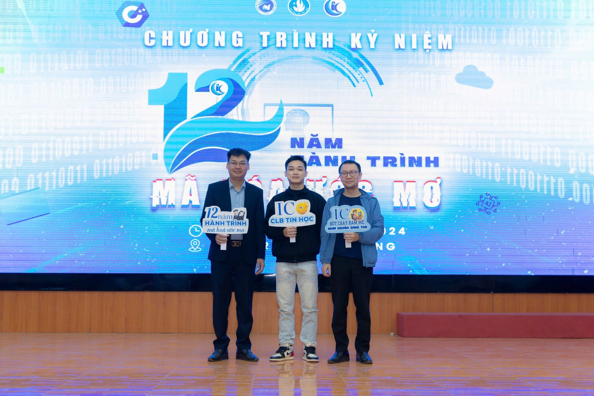
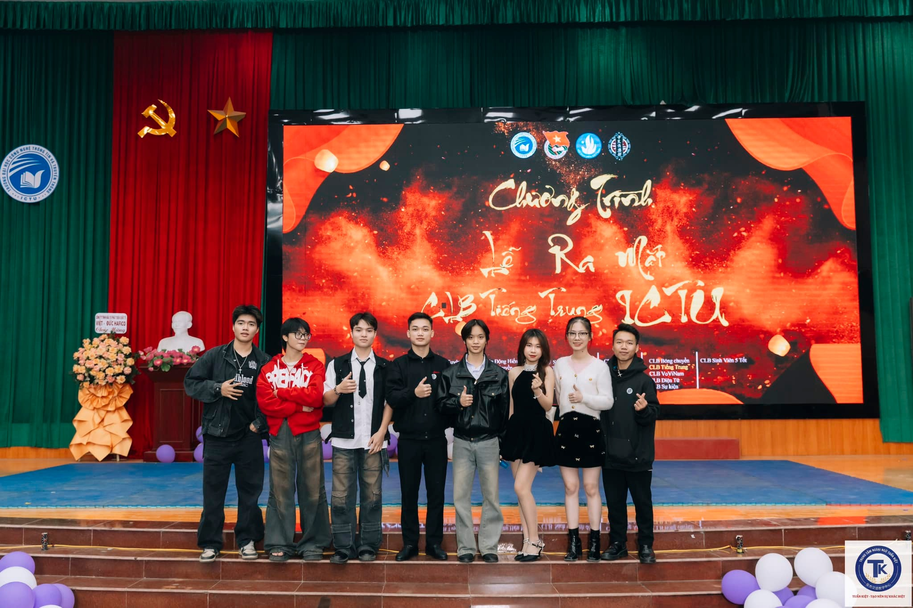
6. Conclusion - Memories That Last
Looking back on my journey as English Club President, I am filled with gratitude for all the experiences, challenges, and achievements. The memories we created together – from the excitement of our first meeting to the pride of winning competitions, from organizing cultural events to celebrating with teachers – these are moments that will stay with me forever.
This journey was not just about leading a club; it was about personal transformation, building lasting friendships, and contributing to a community that values learning and growth. The skills I developed, the relationships I built, and the memories I created have shaped who I am today.
To all the members, advisors, and supporters who were part of this journey – thank you. These memories are not just mine; they belong to all of us who shared in this incredible experience. The English Club will always hold a special place in my heart, and I am proud to have been part of its story.
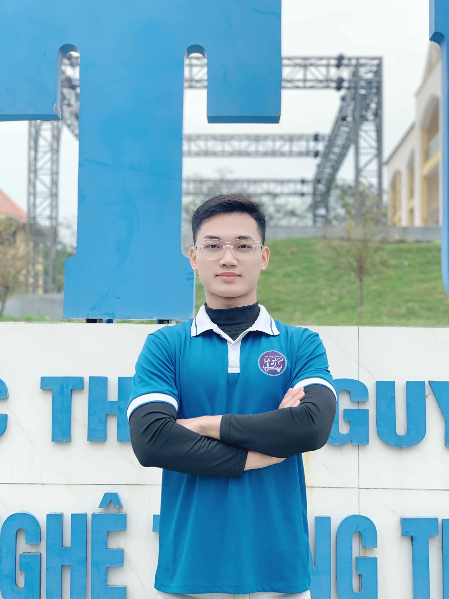
AI & Research
From Student to Discussion Partner: Immersing in AI with Dr. Lin (FCU) at ICTU
That afternoon at ICTU was truly a memorable milestone for me and my fellow technology enthusiasts. The specialized seminar, "Artificial Intelligence Research Experience Sharing: Embedded Devices and Image Processing," featuring Dr. Feng Cheng Lin from Feng Chia University (FCU), Taiwan, was not merely a lecture but a high-level dialogue about the future of AI.
Dr. Lin conveyed in great detail the technical challenges of "embedding" complex AI models into devices with limited memory and power. This is precisely the point of convergence between theory and practical application that I and many engineering students are constantly seeking.
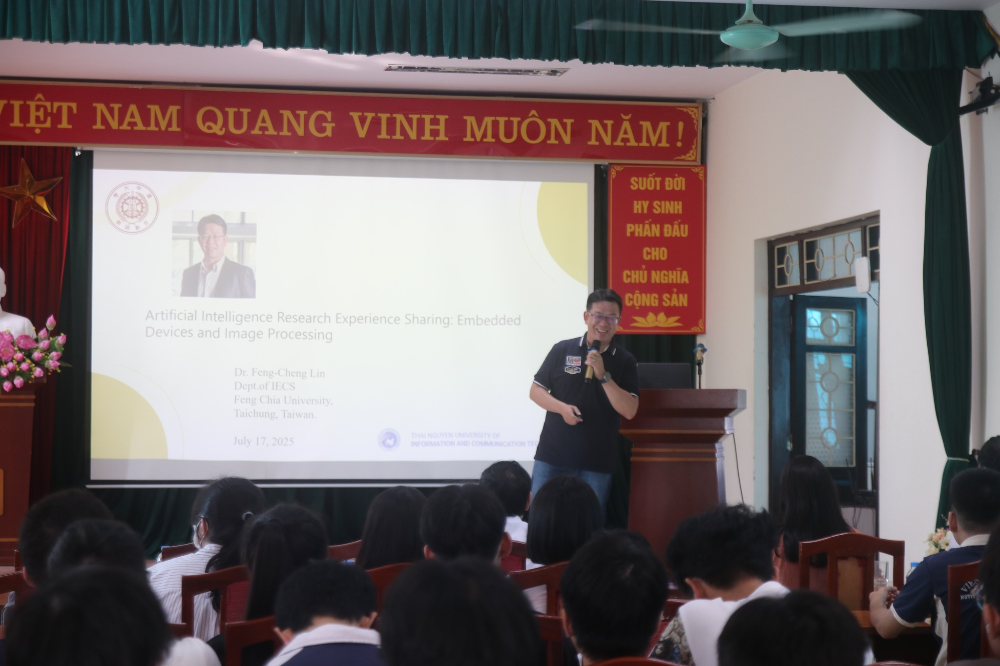
Dr. Feng Cheng Lin passionately shares strategies for optimizing AI models, opening new directions for smart devices.
💬 The Dialogue Moment: Moving Beyond Textbook Theory
The part I anticipated the most—and the part I actively participated in—was the Q&A session. After learning about the techniques of Model Pruning and Quantization, I took the initiative to pose a question about the feasibility of deploying specific image processing algorithms in a real-time environment.
For me, asking a question was not just about satisfying a personal curiosity; it was an opportunity to validate that what we are learning in school can be directly applied to the most cutting-edge research.
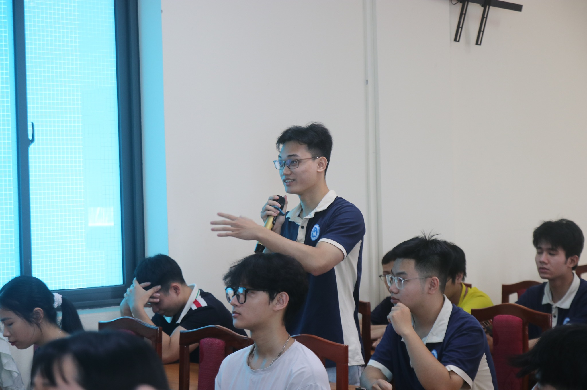
I myself am actively engaging in the Q&A, representing the deep interest of ICTU students in the practical application of AI. That was the moment we transitioned from learners to discussion partners.
🤝 Academic Connection and Personal Vision
Directly participating in this discussion has given me a profound insight into future research directions. This seminar is clear proof of the importance of international cooperation in education and research.
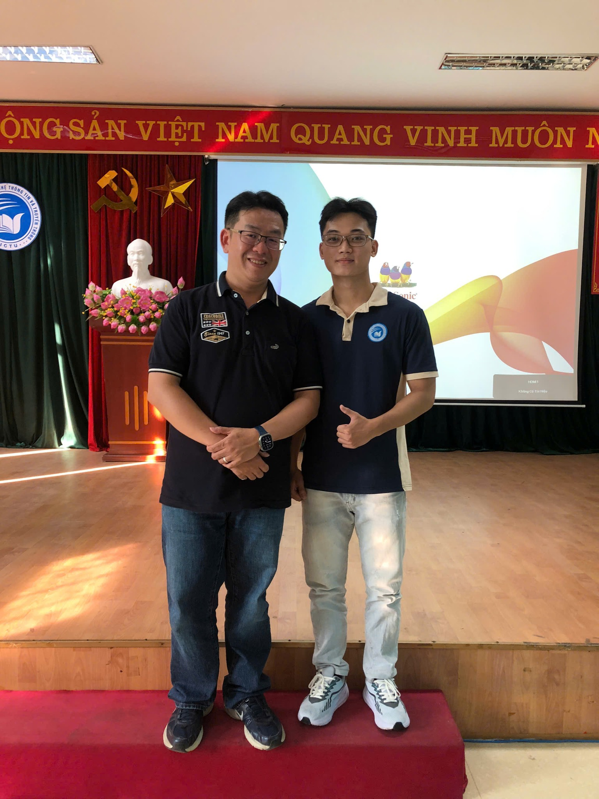
Enjoying and learning directly from leading experts.
This is a valuable memory, a great motivation for me and my peers to continue striving in the field of AI.
The seminar is not only a place for knowledge sharing but also a bridge for a generation of Vietnamese engineers ready to tackle global technological challenges.
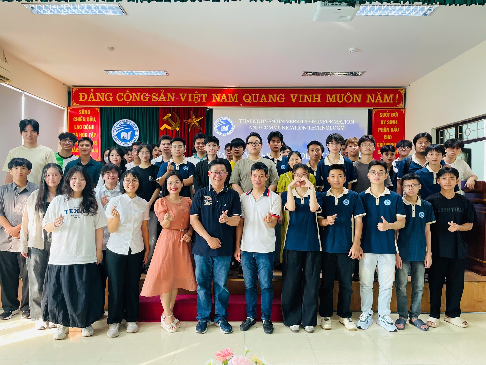
The group photo captures the wonderful learning spirit and the tight academic cooperation between ICTU and FCU.
Achievement
[Achievement Unlocked] Proud Winner of the Second Prize! 🥈
I am thrilled to share that my team and I have officially taken home the Second Prize at the finals of the "Developing AI-Integrated Applications in Education 2025" competition, hosted by the Faculty of Information Technology at ICTU.
The Second Prize (Giải Nhì) award - A proud moment of recognition for our hard work.
This journey has been incredible. Integrating Artificial Intelligence into education is more than just a technological trend; it's about creating practical solutions that truly enhance the teaching and learning experience. This award is a wonderful validation of our team's hard work and research over the past few months.
Celebrating our achievement on stage with the certificate - a moment of pride and accomplishment.
I want to extend a huge thank you to the organizers for creating this intellectual playground, our mentors for their guidance, and especially my amazing teammates for their dedication. This achievement is a huge motivation for me to continue innovating in the EdTech space.
Group photo with all participants, organizers, and mentors - celebrating innovation in AI and Education.
Honored to Attend and Participate in National Scientific Conference
I was honored to be invited to attend and participate in the National Scientific Conference: "Multi-document Summarization Solutions using Pre-trained Language Models and Deep Learning and Applications in Education".
The conference brought together researchers, academics, and professionals working on cutting-edge solutions in natural language processing, AI, and their applications in educational settings. It was an inspiring platform to learn about the latest developments in multi-document summarization techniques and their potential impact on education.
During the event, I had the opportunity to engage with research related to digital technology in architectural reconstruction and simulation at the Cat Tien National Archaeological Site. This research explores how digital technologies can be applied to preserve and reconstruct cultural heritage, particularly ancient architectural structures.
Photo with the conference banner at the National Scientific Conference.
Here are some photos from the conference:
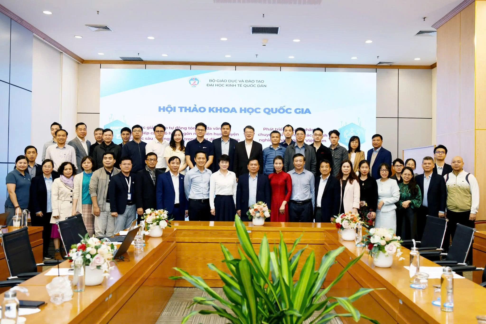
Group photo with conference delegates and participants.
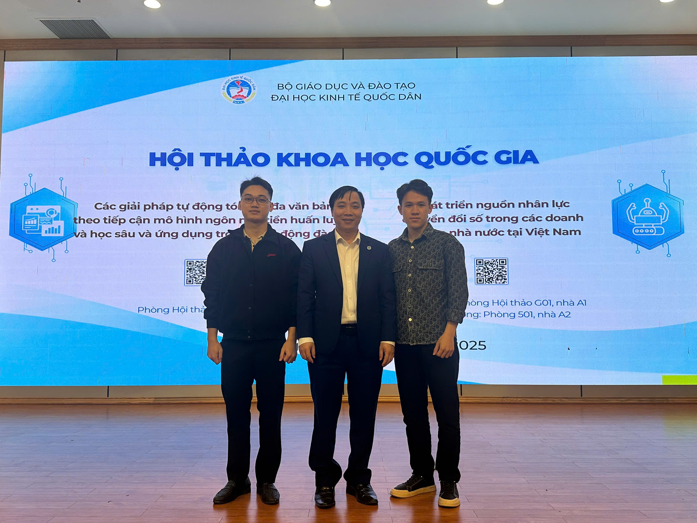
Photo with my supervising Associate Professor at the conference.
I'm grateful to the organizers for creating this valuable platform for academic exchange and to all the participants for the insightful discussions. This experience has been inspiring and motivates me to continue exploring innovative applications of technology in various fields.
ExperienceMedia
MC Experience at Thai Nguyen Newspaper and Television Broadcasting
I had the incredible opportunity to work as an MC for Thai Nguyen Newspaper and Television Broadcasting, where I embarked on a fascinating cultural journey exploring traditional Vietnamese heritage through various immersive experiences.
Experiencing Traditional Then Music
One of the most memorable experiences was learning about and experiencing the traditional Then music. Then is a unique form of folk music from the northern mountainous regions of Vietnam, characterized by its distinctive stringed instruments and melodic storytelling. I had the privilege of meeting with traditional performers who shared their knowledge and passion for this beautiful art form.
Learning about traditional Then music with local performers and cultural experts.
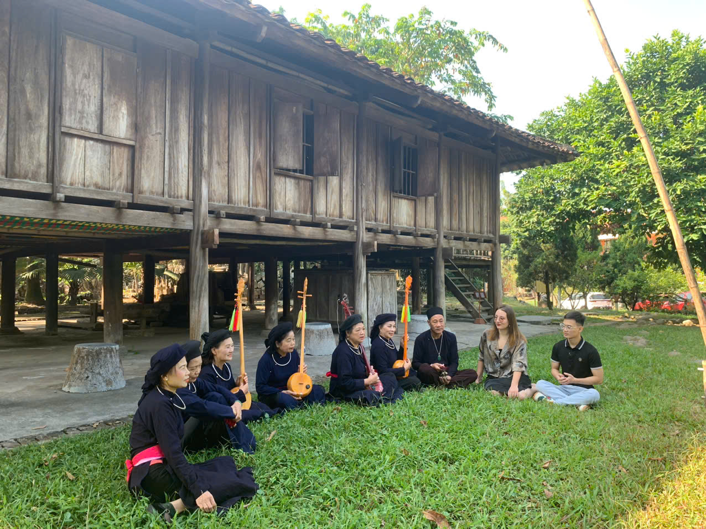
Capturing the Then music performance during the MC program.
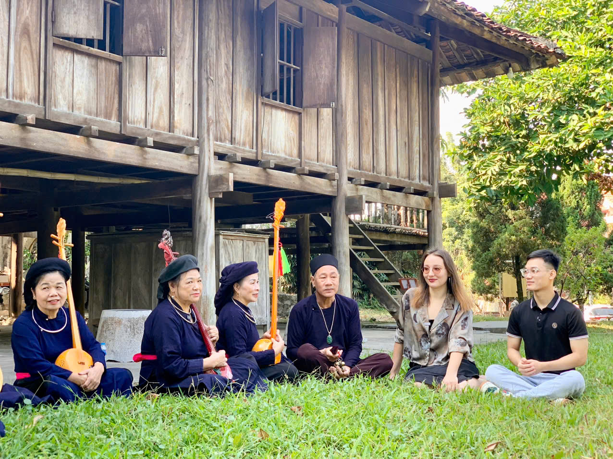
Immersing in the traditional Then music cultural experience.
The performers, dressed in traditional attire, played their instruments with such skill and emotion, transporting us to a different time. It was a profound experience to witness this living cultural heritage and understand its significance in preserving Vietnamese traditions.
Exploring Tea Culture Space
Another highlight was experiencing the traditional tea culture space. Vietnam has a rich tea culture, and I had the chance to participate in a traditional tea ceremony in a beautifully designed wooden tea house. The setting was warm and inviting, with wooden paneling, traditional decorations, and shelves displaying various tea products.
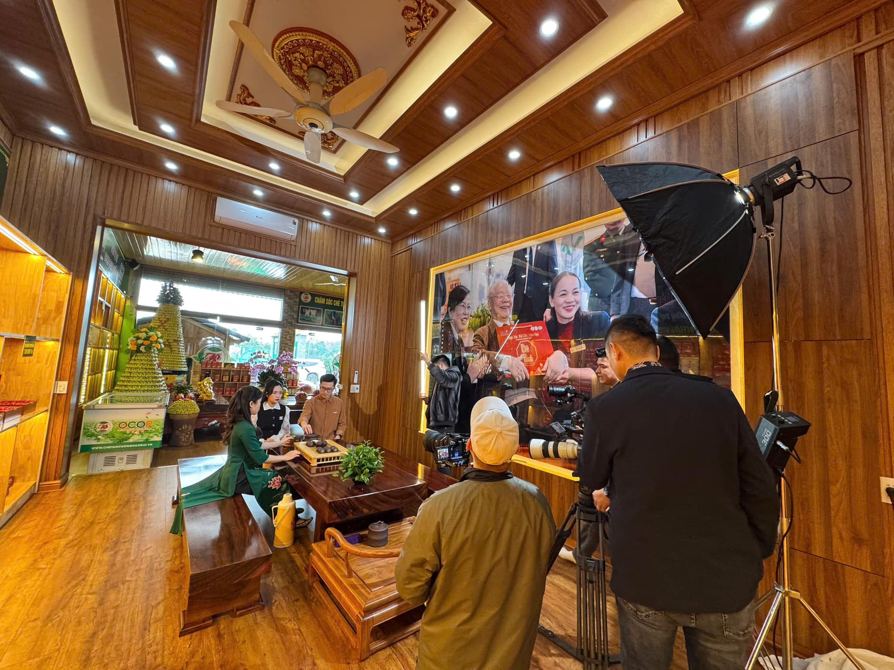
Exploring the traditional tea culture space with its beautiful wooden design and cultural atmosphere.
During the tea ceremony, I learned about different types of Vietnamese tea, the proper way to brew and serve tea, and the cultural significance behind each gesture. It was a meditative and educational experience that deepened my appreciation for Vietnamese tea culture and its role in social bonding and hospitality.
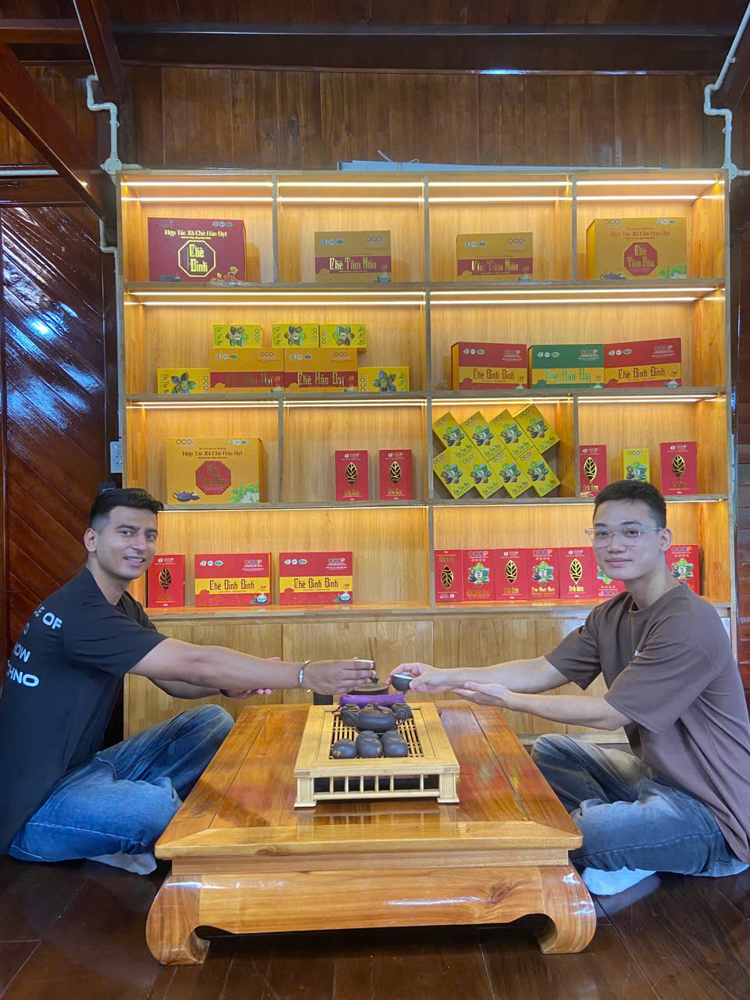
Participating in a traditional tea ceremony and enjoying the authentic tea experience.
Making Traditional Mooncakes
One of the most hands-on and enjoyable experiences was learning to make traditional mooncakes. Mooncakes are an essential part of the Mid-Autumn Festival in Vietnam, and making them from scratch was both challenging and rewarding.
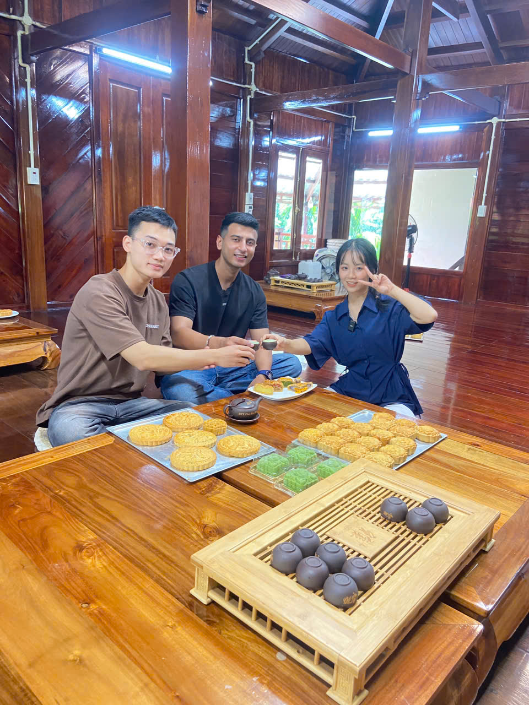
Combining the tea ceremony experience with traditional mooncake making.
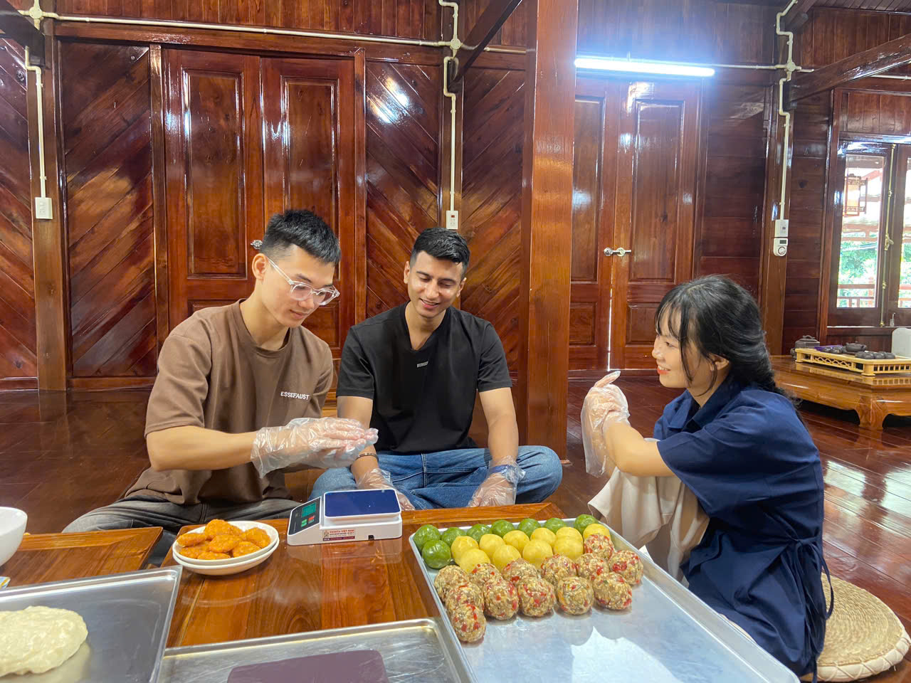
Hands-on experience learning to make traditional mooncakes.
Under the guidance of experienced artisans, I learned the intricate process of preparing the dough, creating the fillings, and shaping the mooncakes with traditional molds. The process required patience and precision, but the result was delicious mooncakes that carried both flavor and cultural meaning. It was wonderful to connect with this traditional craft and understand its importance in Vietnamese celebrations.
Reflections on the Experience
Working as an MC for Thai Nguyen Newspaper and Television Broadcasting provided me with unique opportunities to explore and share Vietnamese culture. Each experience - from the melodic Then music to the serene tea ceremonies and the hands-on mooncake making - enriched my understanding of Vietnam's cultural heritage.
These experiences reminded me of the importance of preserving and promoting traditional culture in the modern world. As an MC, I had the privilege of bringing these cultural treasures to a wider audience, helping to bridge the gap between tradition and contemporary media.
I'm grateful to Thai Nguyen Newspaper and Television Broadcasting for this incredible opportunity and to all the cultural experts, performers, and artisans who shared their knowledge and passion with me. This journey has been both professionally enriching and personally meaningful.
Testimonials from clients, colleagues, and collaborators.
Career Timeline
Key milestones in my professional journey.
2021 - Present
Full-Stack Developer
Building large-scale web applications with Python, .NET Core, and modern JavaScript frameworks.
Specializing in high-performance, scalable solutions.
2020 - 2021
Content Creator & Digital Media
Started creating digital content, building a personal brand on TikTok and other platforms.
Gained experience in video production, scriptwriting, and audience engagement.
2019 - 2020
Education & Learning
Focused on learning full-stack development, mastering Python, JavaScript, and various web technologies.
Built foundational projects and gained hands-on experience.
Certifications & Achievements
Professional recognitions and notable milestones.
Full-Stack Development
Professional Web Engineering
2021 - Present
Content Creator
TikTok & Social Presence
10K+ Followers
MC at TNTV
Thai Nguyen Television
Media Production
Stay Updated
Subscribe to my newsletter for the latest updates, articles, and insights.
Get in Touch
Discuss your project and how I can contribute to its success.